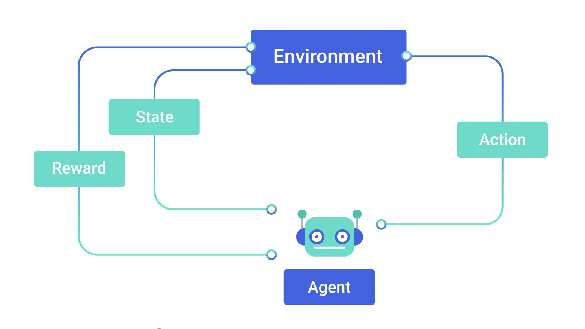

In this project, I have trained an AI that is able to successfully control a rocket in taking off, maneuvering over obstacles such as buildings, and making a smooth touchdown on a landing pad that is located at a distance from the rocket’s take-off location. Watch the following video to see these autonomous rockets in action.
The project has been put together using the Unity game engine and the ML Agents package that's been provided by their team, allowing the implementation of Machine Learning algorithms into Unity. The AI has been trained using a deep reinforcement learning algorithm, in this case, the PPO (Proximal Policy Optimization) algorithm developed by OpenAI.
In the field of AI, there are a couple of focuses, one of which is machine learning. The goal of machine learning is for AI to learn from data and improve its performance over time at some task automatically, without being programmed to do so. There are three basic paradigms within machine learning: reinforcement learning, supervised learning, and unsupervised learning. In reinforcement learning, autonomous agents interact with an environment and learn from this interaction through trial and error.
While an agent is doing its task, a couple of things are taking place in the background: the agent is observing the state of the environment, taking action, and receiving rewards from the environment. This is definitely not all that is happening behind the scenes, but for the sake of keeping things simple and understandable, this is all you need to know to appreciate the concept of reinforcement learning.
Autonomous agents constantly observe their surrounding environment just like us humans do. For an agent to successfully learn and accomplish a task, it is critical that it observes the appropriate states in the environment. In this project, for example, the rocket agent observes critical values including its position, rotation, velocity, angular velocity, the position of the landing pad, etc. Watch the following video to see the rocket agent make observations.
Using the observations it makes, the agent evaluates its options and then takes the most appropriate actions. For our rocket agent, an example of this would be the agent observing that the rocket is going too fast and then taking action to slow down by rotating itself accordingly and turning its engine on.
While all of this observing and taking action is going on, the agent is also being rewarded (or punished) by the environment for certain behaviour. This is a really key aspect of reinforcement learning since the agent learns through rewards when training. To get the agent to learn, an environment must be designed to reward the agent when it does something desirable, and punish it whenever it does something undesirable. It is important to note that the agent’s goal when training is to raise its cumulative reward as much as possible in each attempt, or “episode” as they’re called. As a result of this, and after a lot of training, the agent learns how it must behave in order to accumulate as much reward as possible. Taking our rocket agent as an example, a reward of -2 (a punishment) is given when it crashes, and a reward of +2 is given when it successfully lands; consequently, after much trial and error, it learns to land and not crash, all in the purpose of accumulating more rewards. This process of learning sounds familiar to many, and it should, because it is the same conceptual process that many living creatures, including ourselves, partly adhere to at times of learning. A perfect example of this process in the real world would be the way we teach certain tricks or behaviour to pets such as dogs. By giving them treats when they behave as we like them to, and not when they don’t, they learn to behave as we desire since they have associated the behaviour with rewards.
This is my first project ever that is related to AI, and to be honest, I am really glad to have picked this up because it revealed to me just how interesting the field of AI is. The feeling of excitement and happiness that emerges when you see your agent succeed, is a very distinct feeling. When I saw my agent land the rocket for the first time, my mind was blown away and I was flushed with excitement. This was an awesome project to work on, but that is not to ignore all the struggles that I faced. When I started on this project, I knew very little about reinforcement learning, and so, it took me a couple of days just to understand what I was doing. While attempting to train the agent, I had to restart the whole training process many times, sometimes after many hours or even days of training. This was due to issues such as unstable training, the agent not making any progress, or learning undesired behaviour, etc. To fix such problems, I had to make changes to things including the reward system, the agent’s observations, the environment, the training hyperparameters, etc., which sometimes required a fresh start. After about 2 weeks of adjusting the process, I restarted the training one last time and trained the agent for over 275 million steps which took about 62 hours spanning over a 5 day period. It was this training that made the agents you see now as good as they are. When the training began, the task was very simple, but as the agent progressed, the task got harder and harder. This incremental learning process was very crucial since the agent would’ve had a really hard time progressing if it were to start with a difficult task. This is similar to how people learn things such as maths by starting from the very basics and learning their way up, rather than jumping straight to the top where they’ll understand nothing.
There is a lot that can be improved about this project, so I’m not going to let it go just yet; there’s still work to be done. Currently, the agent can turn its engine on and off with little time in between and for an unlimited number of times. This is unrealistic since real rocket engines are very mechanical and are only able to reliably turn on and off a limited number of times. This is one thing to improve on for future agents. Another thing to implement would be fuel consumption since the agents right now have an infinite amount of fuel available to them. Along with that, it’d also be nice to have the mass of the rocket decrease as fuel is used. This would be great, because at the moment, the agent is used to a static amount of mass, and fails to behave properly when the mass of the rocket is altered. Lastly, the agent’s ray perception can be improved to allow the agents to detect each other, because currently, they can’t, which causes them to crash without any attempt to avoid one another. Obviously, there is a lot to do and the agent is amazing as is, but I’m really excited to keep on going with this project because I can’t imagine just how much better it can get with these improvements.